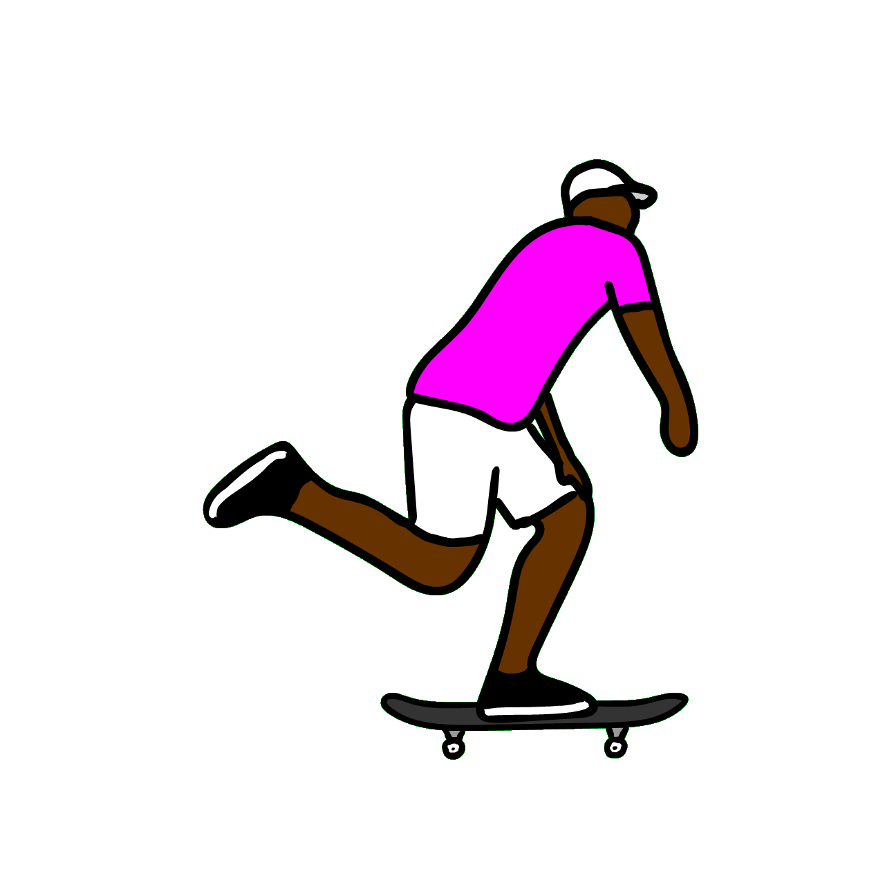

Skate é um esporte radical muito praticado atualmente. Consiste em, realizar manobras
deslizando
sobre o
solo (com ou sem obstáculos) equilibrando-se sobre o skate. O skate é uma prancha (shape) que possui
dois eixos (trucks), rolamentos e quatro pequenas rodas.
Mais do que um esporte, o skate tornou-se um estilo de vida. Os skatistas usam roupas
características,
tem suas próprias gírias e costumes.
O skate surgiu na Califórnia, Estados Unidos, nos anos 60. Foi inventado por alguns
surfistas, como
uma
brincadeira para um dia no qual não havia ondas no mar. Eles utilizaram rodinhas de patins.
Já em 1965 foram fabricados os primeiros skates e realizados os primeiros campeonatos.
Mas o esporte só ganhou o mundo nos anos 90, quando o norte-americano Tony Hawk realizou uma
revolução com seus aéreos e flips. Tony Hawk é considerado, até hoje, o maior skatista de todos os
tempos.
O skate é praticado pelas ruas do mundo todo, ou em ligares específicos, como os skate parks.